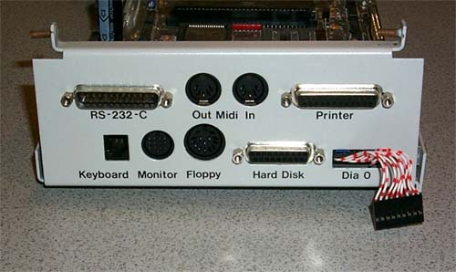
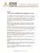

The Blossom Video Card which gives the
ATW800 its high speed,
high resolution graphics.
The Atari Panther video game console was
rumored to have utilized the Blossom graphics
technology.
Model # ATW800
The Atari ATW800 Transputer workstation was a high end, high powered system which combined the power of the ABAQ Transputer system with the front end power of the Atari Mega ST. Used together, they formed an amazingly powerful and versital computer. The Transputer system allowed the use of "Farm Cards" with multiple parallel processors to form a powerful Parallel Processing computer system. These power-house workstations could then be linked to one another to form parallel processing networks where each workstation then formed a piece of the whole and the entire network could then work together.
Sorry that there isn't more in this section yet, please be patient as I
will try to include as much of the information that I have been able to
gather on this system and get it up onto the website. I hope
everyone enjoys the graphic above, its a combination of pictures from Atari
materials and Inmos materials.
The ATW800 Motherboard is HUGE to say
the least, its almost
4 times the size of a normal AT sized
PC motherboard.
The Blossom Video Card which gives the
ATW800 its high speed,
high resolution graphics.
The Atari Panther video game console was
rumored to have utilized the Blossom graphics
technology.

The ATW I/O Subsystem consisted of an
Atari Mega ST in a compact form with
TOS 1.4 The unit can function
as a complete standalone Atari Mega ST.

All standard ST ports (except joystick
ports) are available.

The Ascila ASCI Link adapter allowed higher
speed DMA ASCI link transfers
of up to 900K per second, plus the use
of external MegaFile hard disk modules.
Atari Press Release for the Atari ATW800 Transputer
|  | |||
| Page 1 | Page 2 | Page 3 | Page 4 |
{kind=link}
{kind=link}
{kind=link}
{kind=link}